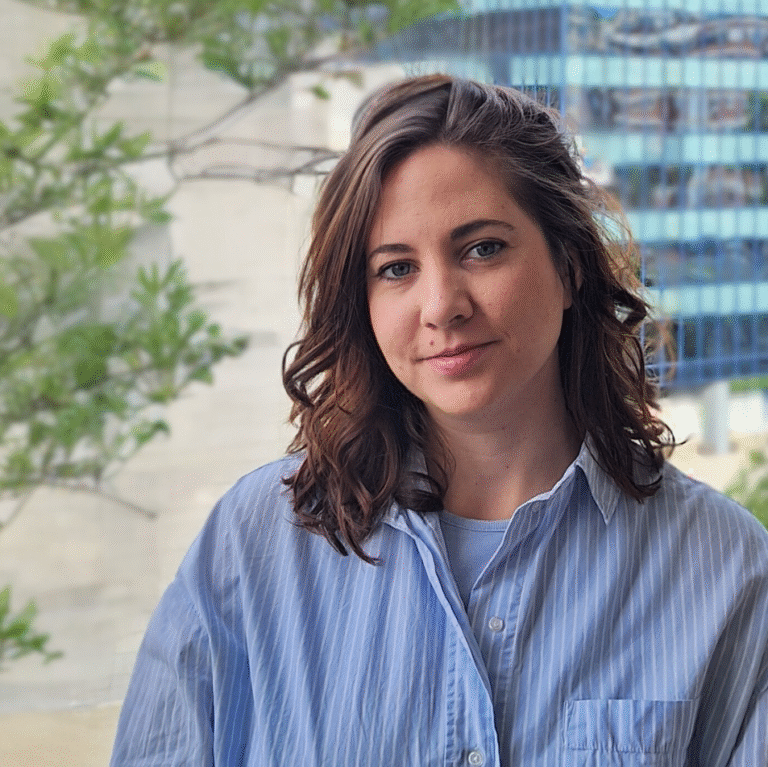

Elisa Bergas Massó
Postdoctoral Research Scholar
Aerosols • Dust • Ocean Biogeochemistry
My research explores how atmospheric aerosols shape the Earth System. By combining Earth System models and observations, I investigate how desert dust and biomass-burning aerosols influence ocean biogeochemistry, marine productivity, carbon sequestration, and ecosystem health.
Earth System Science
Atmospheric Aerosols
Wildfires
Desert Dust
Aerosol–Earth System Interactions
Air–Sea Interactions
Ocean Biogeochemistry
Data Visualization